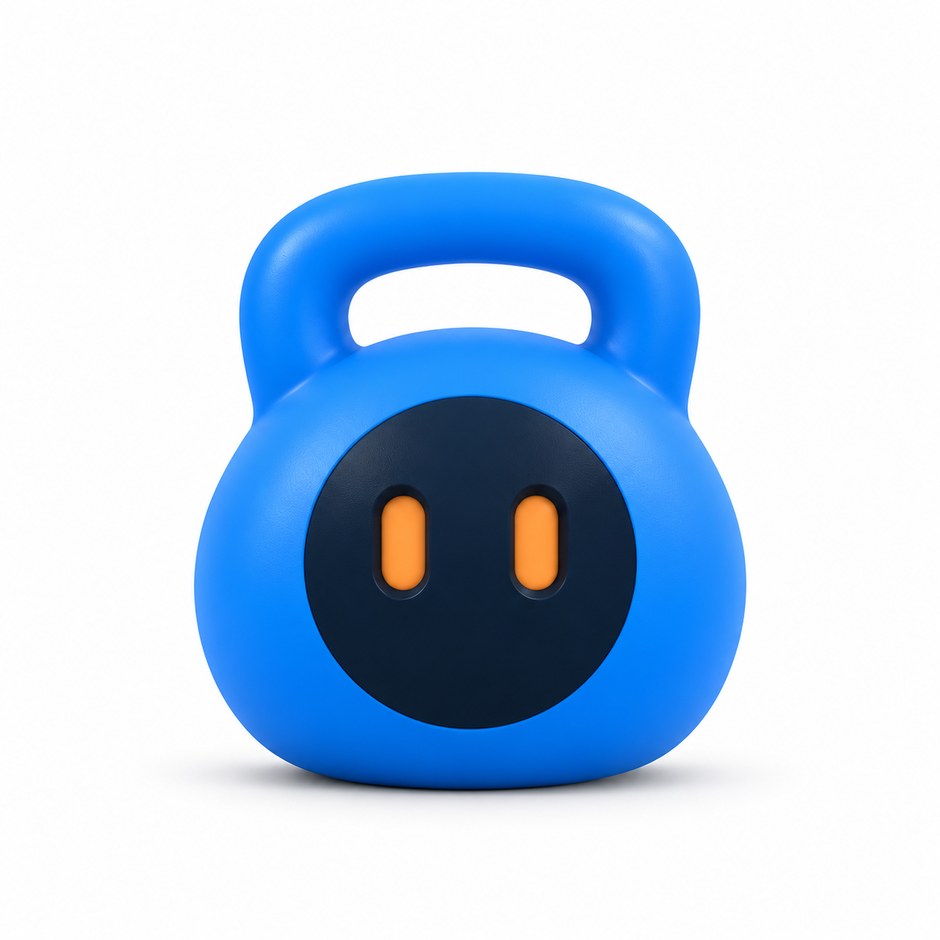

AimHarder MCPAtomic emote · Hop and settle
A little hop, a soft landing.
Close the eyes in anticipation, make one low hop, then rock gently on the base and settle.

Waiting for the existing Runway task. The video will be available here after automatic processing; playback remains manual. Visual review is pending.
Review closed-eye anticipation, one hop, the grounded landing rock and neutral endpoints. This is a media experiment, not the public website or an accepted final animation.